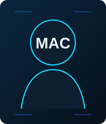

Gobierno y cumplimiento
ENS, ISO 27001, ISO 42001, ISO 22301, NIS2 y GDPR aplicados a organizaciones reales.

Conecto arquitectura, seguridad, riesgo y cumplimiento para que la tecnología proteja y habilite el negocio.
ENS, ISO 27001, ISO 42001, ISO 22301, NIS2 y GDPR aplicados a organizaciones reales.
Diseño y evolución de plataformas on-premises, cloud y multicloud con seguridad desde el diseño.
Arquitectura y gobierno en Azure y Google Cloud, landing zones, identidad y controles nativos.
Fortinet, SonicWall, segmentación, ZTNA, SASE, VPN e identidades con mínimo privilegio.
BCP, DRP, backup inmutable, pruebas de restauración y resiliencia de servicios críticos.
ISO 42001, gobierno de modelos, GenAI, RAG, agentes, seguridad y cumplimiento AI-driven.
Conectar arquitectura, seguridad, cumplimiento y realidad operativa es donde se marcan las diferencias.
Contactar en LinkedIn →